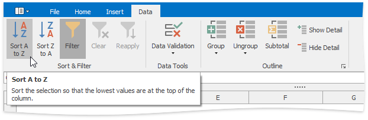
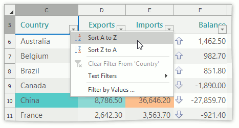
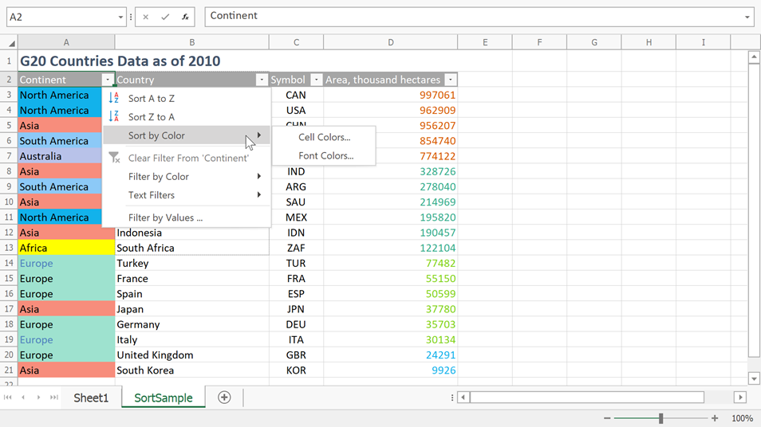
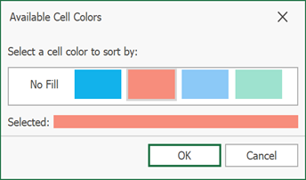

Sort Data
The Spreadsheet allows you to sort data by text (A to Z or Z to A), numbers (smallest to largest or largest to smallest), dates and times (oldest to newest or newest to oldest), and color in one column.
To sort data, do the following.
Select a range in the column you wish to sort.
On the Data tab, in the Sort & Filter group, click Sort A to Z to select ascending order, or click Sort Z to A for descending order.

Note
If multiple columns are selected, the range is sorted by the first column.
Sort a Table
To sort data in a table, follow the steps below.
Click the arrow
 in the header of the column by which data will be sorted.
in the header of the column by which data will be sorted.In the drop-down menu, select the Sort A to Z item to select ascending order, or select the Sort Z to A item to select descending order.

All the records in the table are reordered accordingly. The tiny arrow  appears in the column header to indicate that data in the table are sorted by this column.
appears in the column header to indicate that data in the table are sorted by this column.
Note
You cannot sort a table by more than one column at a time. When you apply a new sort order, it replaces the previous one.
Sort Data by Color
The AutoFilter menu allows a user to sort cells by color. Do the following to sort data by color.
Click the arrow
in the header of the column by which to sort data.Select Sort by Color. You can sort data by cell background or font color. 
When you select the required sorting option, a dialog with available colors appears. Select the target color and click OK. 